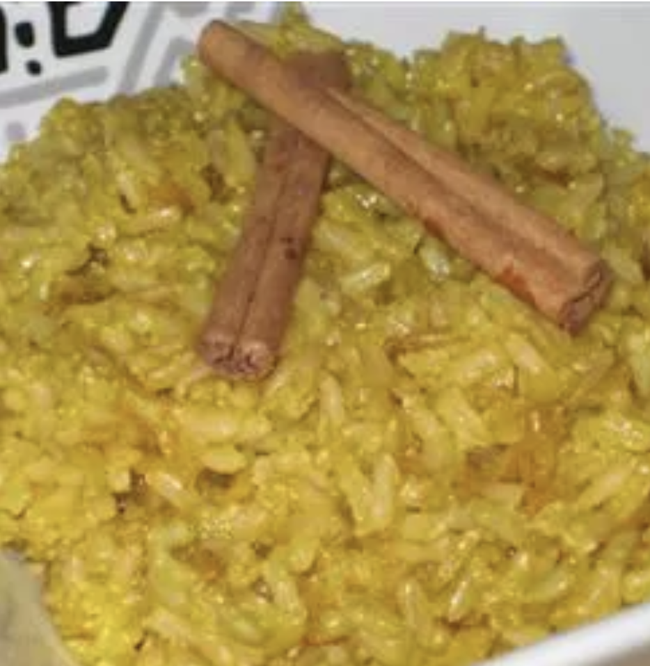

Pulao

This is Pulao. An indian breakfast dish, mostly prefereed with curd.
It's a rice dish made with basmati rice, spices and vegetables. It is a very popular breakfast dish in India.
It is very easy to make and very delicious to eat
Ingrediants
- Basmati rice
- Vegetables (carrots, peas, beans, etc.)
- Onions
- Tomatoes
- Ginger-garlic paste
- Green chilies
- Spices (cumin, coriander, turmeric, garam masala, etc.)
- Salt
- Oil or ghee
- Water
- Fresh coriander leaves (for garnish)
Steps
- Rinse the basmati rice thoroughly and soak it in water for 30 minutes.
- Heat oil or ghee in a pan and sauté onions until golden brown.
- Add ginger-garlic paste, green chilies, and tomatoes, and cook until the tomatoes are soft.
- Add the vegetables and spices, and cook for a few minutes.
- Add the soaked rice and water, bring to a boil, then cover and simmer until the rice is cooked.
Back to Home